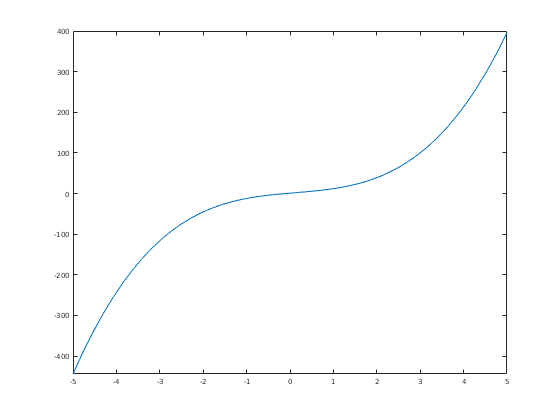
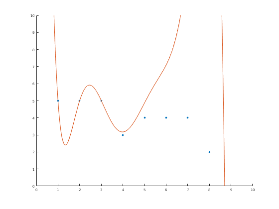
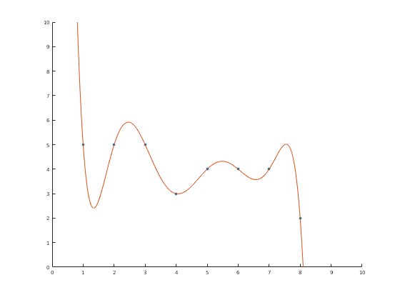
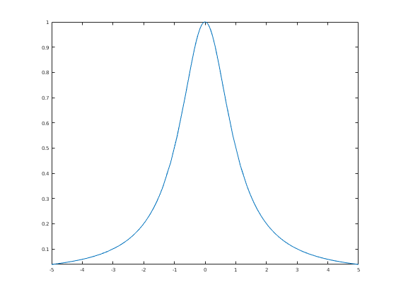
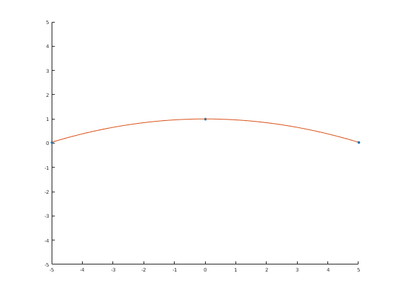
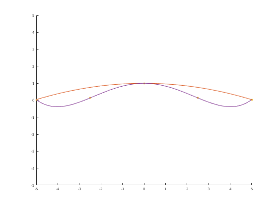
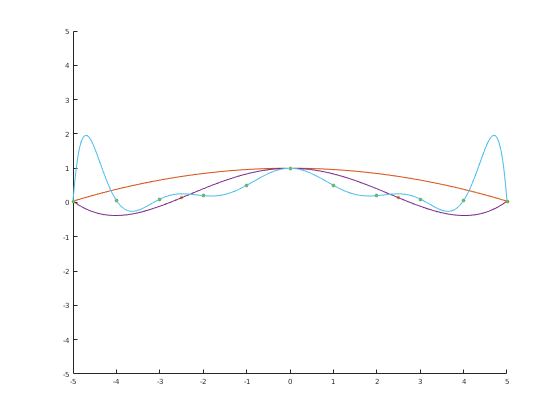

Groupwork 1/31/2018.
Contents
Question 1: do Exercise 4.3 and submit it by 2:15 pm. This is the quiz.
A = transpose([1 2 -1 0; 3 3 0 3]); b = [0;0;0;1]; x = inv(A'*A)*A'*b; x
x =
-0.3333
0.2222
Question 2.
It's 2018, right? We have super-powerful computers. Why not just skip the whole "least squares" thing and fit a curve exactly? Good rhetorical question, me! Let's try that.
B = [1 5; 2 5; 3 5; 4 3; 5 4; 6 4; 7 4; 8 2];
a) B stands for Beethoven. Why? Because it's the Symphony 5 in C-(Fate)
b) Put Xn.m in your working path. What does Xn() do? It generates the basis of an n-degree polynomial.
Uncomment the following code, then explain why the output makes sense.
a = [3 -1 9 1]*Xn(3) fplot(a) % This makes sense because it is the plot of the function % y = 3x^3 - x^2 + 9x + 1
a = 3*x^3 - x^2 + 9*x + 1
c) Okay, now set up the augmented matrix that will let you solve for the interpolation polynomial; call it A. You'll probably find the following helpful: https://en.wikipedia.org/wiki/Polynomial_interpolation#Constructing_the_interpolation_polynomial
% help vander % Great. Okay. Now just rref(A) and then hit the output with Xn(7) to get % your polynomial p! Mcoeffs = rref([vander([1:8]) B(:, 2)]) co = Mcoeffs(:,end)
Mcoeffs =
Columns 1 through 7
1.0000 0 0 0 0 0 0
0 1.0000 0 0 0 0 0
0 0 1.0000 0 0 0 0
0 0 0 1.0000 0 0 0
0 0 0 0 1.0000 0 0
0 0 0 0 0 1.0000 0
0 0 0 0 0 0 1.0000
0 0 0 0 0 0 0
Columns 8 through 9
0 -0.0103
0 0.3306
0 -4.3306
0 29.8056
0 -115.0476
0 245.3636
0 -263.1119
1.0000 112.0000
co =
-0.0103
0.3306
-4.3306
29.8056
-115.0476
245.3636
-263.1119
112.0000
Good job. Obviously we want to check that it does actually do what we say it does. So:
scatter(B(:,1),B(:,2),'filled') hold on; p = co' * Xn(7) fplot(p) axis([0 10 0 10])
p = - x^7/97 + (40*x^6)/121 - (524*x^5)/121 + (1073*x^4)/36 - (2416*x^3)/21 + (2699*x^2)/11 - (37625*x)/143 + 112
d) If you did this right, your polynomial should go pretty much exactly through the first four points and then start to freak out. That's intentional; rref is awful. So instead invert the Vandermonde and multiply it by the output vector to get your coefficients. Call it q. Then plot that.
hold off; scatter(B(:,1),B(:,2),'filled') hold on; q = (inv(vander(1:8)) * B(:,2))' * Xn(7) fplot(q) axis([0 10 0 10])
q = - (5947610936467459*x^7)/576460752303423488 + (2977379753652225*x^6)/9007199254740992 - (2437886048289803*x^5)/562949953421312 + (2097379513963213*x^4)/70368744177664 - (4047864274455411*x^3)/35184372088832 + (8632974363834089*x^2)/35184372088832 - (4628713579074499*x)/17592186044416 + 7881299347902225/70368744177664
Okay now here's the real issue.
syms x; hold off; runge = 1/(1+x^2); fplot(runge)
Do polynomial interpolation for runge(x) on [-5,5] with 3 equally-spaced points.
Three = [-5 0 5] Threepoints = [Three; subs(runge,x,Three)] Y = (Threepoints(2,:))' scatter(Three', Y','filled') hold on; len = length(Three); invV = inv(vander(Three)); q = (invV * Y)' * Xn(len-1) fplot(q) axis([-5 5 -5 5])
Three =
-5 0 5
Threepoints =
[ -5, 0, 5]
[ 1/26, 1, 1/26]
Y =
1/26
1
1/26
q =
1 - x^2/26
 Five.
interp(4)
Eleven.
interp(10)
Five =
-5 -4 -3 -2 -1 0 1 2 3 4 5
Fivepoints =
[ -5, -4, -3, -2, -1, 0, 1, 2, 3, 4, 5]
[ 1/26, 1/17, 1/10, 1/5, 1/2, 1, 1/2, 1/5, 1/10, 1/17, 1/26]
Y =
1/26
1/17
1/10
1/5
1/2
1
1/2
1/5
1/10
1/17
1/26
q =
- (8264141345021879156947*x^10)/365275047449967057279385600 - (54293395507744323*x^9)/138239711561631250781995934269155835904 + (1016876767063239034817*x^8)/802606305432056522342400 + (6254999482459023*x^7)/664613997892457936451903530140172288 - (537408995099380367162101*x^6)/22014344377564978898534400 + (5069275951919827049131501*x^4)/25683401773825808714956800 - (149*x^2)/221 + 1
 21.
interp(20)
function interp(n) syms x; runge = 1/(1+x^2); Five = [-5:(10/n):5] Fivepoints = [Five; subs(runge,x,Five)] Y = (Fivepoints(2,:))' scatter(Five, Y,'filled') hold on; len = length(Y); invV = inv(vander(Five)); q = (invV * Y)' * Xn(len-1) fplot(q) axis([-5 5 -5 5]) end
Five =
-5.0000 -2.5000 0 2.5000 5.0000
Fivepoints =
[ -5, -5/2, 0, 5/2, 5]
[ 1/26, 4/29, 1, 4/29, 1/26]
Y =
1/26
4/29
1
4/29
1/26
q =
(2*x^4)/377 - (129*x^2)/754 + 1